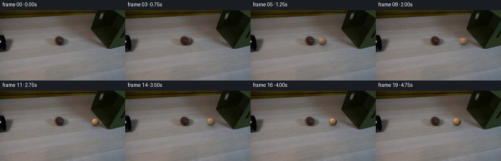
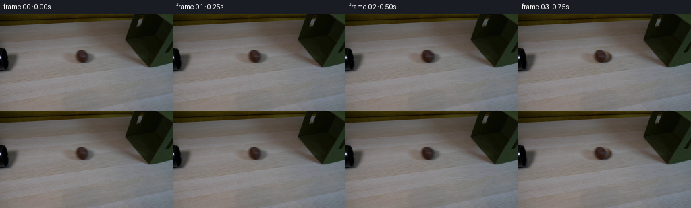
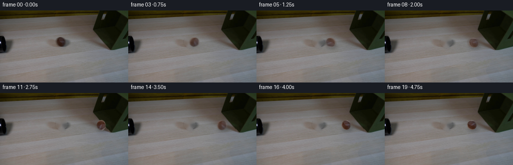
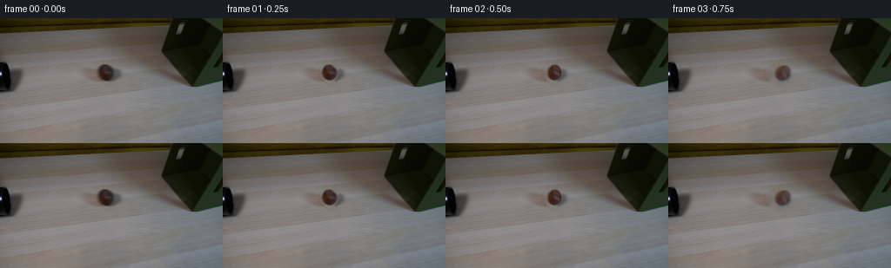

CODING AGENTS AS PIXEL WORLD MODELS
traex/DeepSeek-V4.1-Flash · 0151
点击播放 · 原生 RGB 像素
逐轮保存的候选
回放视频、检查图与代码变化。
每份候选均可单独播放。实际图片检查记录在下方工具轨迹中。
候选 01播放与检查图
点击播放 · 原生 RGB 像素


展开代码变化
--- 上一保存版本
+++ 本次保存版本
@@ -0,0 +1,265 @@
+from pathlib import Path
+
+import numpy as np
+from PIL import Image, ImageFilter
+
+import artifact_io
+
+
+HERE = Path(__file__).resolve().parent
+WIDTH = 256
+HEIGHT = 144
+N_FRAMES = 20
+
+# The visible dark oval in the first frame is the tube mouth. The ball starts
+# inside the tube and becomes visible as it crosses the mouth toward the box.
+MOUTH_CENTER = np.array([121.5, 62.5], dtype=np.float32)
+MOUTH_RADIUS = 9.6
+
+
+def _smoothstep(edge0, edge1, value):
+ t = np.clip((value - edge0) / (edge1 - edge0), 0.0, 1.0)
+ return t * t * (3.0 - 2.0 * t)
+
+
+def make_ball_sprite(
+ radius_px,
+ exposure=1.0,
+ roll_angle=0.0,
+ squash_x=1.0,
+ squash_y=1.0,
+):
+ """Render a small felt ball at high resolution, then downsample cleanly."""
+ hi = 128
+ c = (hi - 1) * 0.5
+ base_r = 48.0
+ yy, xx = np.mgrid[0:hi, 0:hi].astype(np.float32)
+ u = (xx - c) / (base_r * squash_x)
+ v = (yy - c) / (base_r * squash_y)
+ rr = u * u + v * v
+ inside = rr <= 1.0
+
+ nz = np.sqrt(np.clip(1.0 - rr, 0.0, 1.0))
+ light = np.array([-0.48, -0.70, 0.54], dtype=np.float32)
+ light /= np.linalg.norm(light)
+ diffuse = np.clip(u * light[0] + v * light[1] + nz * light[2], 0.0, 1.0)
+
+ # Brown tennis-felt base with a warm upper-left key light.
+ base = np.array([164.0, 116.0, 76.0], dtype=np.float32) * exposure
+ shade = 0.44 + 0.78 * diffuse
+
+ # Low-frequency felt variation; it remains subtle after downsampling.
+ texture = (
+ 2.8 * np.sin(17.0 * u + 7.0 * v)
+ + 2.0 * np.sin(23.0 * v - 5.0 * u)
+ + 1.2 * np.cos(31.0 * u * v + 2.0)
+ )
+ color = base[None, None, :] * shade[:, :, None]
+ color += texture[:, :, None] * np.array([1.0, 0.72, 0.48], dtype=np.float32)
+
+ # Two restrained seam arcs, rotated to suggest rolling.
+ ca, sa = np.cos(roll_angle), np.sin(roll_angle)
+ ur = ca * u - sa * v
+ vr = sa * u + ca * v
+ seam1 = np.abs(vr - 0.31 * np.sin(2.7 * ur + 0.55)) < 0.043
+ seam2 = np.abs(vr + 0.31 * np.sin(2.7 * ur - 0.55)) < 0.043
+ seam = (seam1 | seam2) & (rr < 0.82)
+ seam_color = np.array([204.0, 184.0, 146.0], dtype=np.float32) * exposure
+ color[seam] = 0.70 * color[seam] + 0.30 * seam_color
+
+ # Slight specular lobe and darker rim give the sprite volume at 20 px.
+ color += (diffuse ** 14)[:, :, None] * np.array([42.0, 33.0, 20.0], dtype=np.float32)
+ rim = np.clip((np.sqrt(rr) - 0.72) / 0.28, 0.0, 1.0)
+ color *= 1.0 - 0.30 * rim[:, :, None]
+
+ # Antialiased circular edge.
+ dist = np.sqrt(rr)
+ alpha = np.clip((1.0 - dist) * (base_r / 1.5), 0.0, 1.0)
+ alpha[~inside] = 0.0
+
+ rgba = np.zeros((hi, hi, 4), dtype=np.uint8)
+ rgba[:, :, :3] = np.clip(color, 0.0, 255.0).astype(np.uint8)
+ rgba[:, :, 3] = np.clip(alpha * 255.0, 0.0, 255.0).astype(np.uint8)
+
+ diameter = max(6, int(round(2.0 * radius_px)) + 2)
+ sprite = Image.fromarray(rgba, "RGBA").resize(
+ (diameter, diameter), Image.Resampling.LANCZOS
+ )
+ return sprite
+
+
+def add_soft_shadow(frame, x, y, radius, strength):
+ """Darken the table beneath the ball with a blurred elliptical shadow."""
+ if strength <= 0.0:
+ return frame
+
+ scale = 4
+ pad = 24
+ sw = int(radius * 2.2 * scale + pad * 2)
+ sh = int(radius * 1.25 * scale + pad * 2)
+ shadow = Image.new("L", (sw, sh), 0)
+ draw = Image.new("L", (sw, sh), 0)
+ from PIL import ImageDraw
+
+ d = ImageDraw.Draw(draw)
+ cx = sw // 2
+ cy = sh // 2
+ d.ellipse(
+ (
+ cx - radius * 1.18 * scale,
+ cy - radius * 0.38 * scale,
+ cx + radius * 1.18 * scale,
+ cy + radius * 0.38 * scale,
+ ),
+ fill=int(255 * strength),
+ )
+ draw = draw.filter(ImageFilter.GaussianBlur(radius=radius * 0.34 * scale))
+ shadow = Image.alpha_composite(
+ Image.new("RGBA", (sw, sh), (0, 0, 0, 0)),
+ Image.merge("RGBA", (Image.new("L", (sw, sh), 0),) * 3 + (draw,)),
+ )
+
+ shadow = shadow.resize((sw // scale, sh // scale), Image.Resampling.LANCZOS)
+ left = int(round(x + radius * 0.20 - shadow.width / 2))
+ top = int(round(y + radius * 0.78 - shadow.height / 2))
+ layer = Image.new("RGBA", (WIDTH, HEIGHT), (0, 0, 0, 0))
+ layer.alpha_composite(shadow, (left, top))
+ return Image.alpha_composite(frame.convert("RGBA"), layer).convert("RGB")
+
+
+def aperture_visibility_mask(x, y, radius):
+ """Hide the part of the ball still inside the dark tube opening."""
+ yy, xx = np.mgrid[0:HEIGHT, 0:WIDTH].astype(np.float32)
+ dx = xx + 0.5 - MOUTH_CENTER[0]
+ dy = yy + 0.5 - MOUTH_CENTER[1]
+ inside_mouth = (dx * dx + dy * dy) < (MOUTH_RADIUS * 0.97) ** 2
+
+ # The tube rim becomes irrelevant once the whole ball has cleared it.
+ clearance = np.hypot(x - MOUTH_CENTER[0], y - MOUTH_CENTER[1]) - radius
+ blend = _smoothstep(-1.5, 1.5, clearance)
+ visible = np.where(inside_mouth, blend, 1.0)
+ return visible.astype(np.float32)
+
+
+def composite_ball(frame, x, y, radius, exposure, roll_angle, squash_x=1.0, squash_y=1.0):
+ sprite = make_ball_sprite(radius, exposure, roll_angle, squash_x, squash_y)
+ layer = Image.new("RGBA", (WIDTH, HEIGHT), (0, 0, 0, 0))
+ left = int(round(x - sprite.width / 2))
+ top = int(round(y - sprite.height / 2))
+ layer.alpha_composite(sprite, (left, top))
+
+ alpha = np.asarray(layer.getchannel("A"), dtype=np.float32) / 255.0
+ alpha *= aperture_visibility_mask(x, y, radius)
+ layer.putalpha(Image.fromarray(np.clip(alpha * 255.0, 0.0, 255.0).astype(np.uint8)))
+ return Image.alpha_composite(frame.convert("RGBA"), layer).convert("RGB")
+
+
+def motion_blurred_ball(frame, x, y, radius, exposure, roll_angle, dx, squash_x=1.0, squash_y=1.0):
+ """Small shutter smear only while the ball is moving quickly."""
+ if abs(dx) < 5.0:
+ return composite_ball(frame, x, y, radius, exposure, roll_angle, squash_x, squash_y)
+
+ offsets = (-0.36, 0.0, 0.36)
+ weights = (0.18, 0.64, 0.18)
+ result = frame.convert("RGBA")
+ for offset, weight in zip(offsets, weights):
+ sprite = make_ball_sprite(radius, exposure, roll_angle, squash_x, squash_y)
+ sprite.putalpha(sprite.getchannel("A").point(lambda p, w=weight: int(p * w)))
+ layer = Image.new("RGBA", (WIDTH, HEIGHT), (0, 0, 0, 0))
+ layer.alpha_composite(
+ sprite,
+ (
+ int(round(x + offset * dx - sprite.width / 2)),
+ int(round(y - sprite.height / 2)),
+ ),
+ )
+ alpha = np.asarray(layer.getchannel("A"), dtype=np.float32) / 255.0
+ alpha *= aperture_visibility_mask(x, y, radius)
+ layer.putalpha(Image.fromarray(np.clip(alpha * 255.0, 0.0, 255.0).astype(np.uint8)))
+ result = Image.alpha_composite(result, layer)
+ return result.convert("RGB")
+
+
+def ball_state(index):
+ """Return center, radius, exposure, roll angle, squash and frame velocity."""
+ # Frames 0-1 hold the exact initial scene while the ball is inside the tube.
+ if index <= 1:
+ return None
+
+ states = {
+ 2: (123.8, 62.9, 9.55, 0.52, -0.28, 1.00, 1.00, 2.3),
+ 3: (129.5, 63.2, 9.65, 0.66, -0.84, 1.00, 1.00, 5.7),
+ 4: (137.5, 63.5, 9.76, 0.79, -1.68, 1.00, 1.00, 8.0),
+ 5: (146.8, 63.8, 9.88, 0.89, -2.65, 1.00, 1.00, 9.3),
+ 6: (157.0, 64.0, 9.99, 0.96, -3.72, 1.00, 1.00, 10.2),
+ 7: (168.1, 64.2, 10.09, 1.00, -4.88, 1.00, 1.00, 11.1),
+ 8: (180.0, 64.4, 10.18, 1.00, -6.13, 1.00, 1.00, 11.9),
+ 9: (190.3, 64.6, 10.25, 1.00, -7.22, 1.00, 1.00, 10.3),
+ 10: (197.8, 64.7, 10.28, 1.00, -8.04, 0.94, 1.045, 7.5),
+ 11: (195.0, 64.6, 10.20, 1.00, -7.76, 1.00, 1.00, -2.8),
+ 12: (188.0, 64.4, 10.10, 1.00, -7.02, 1.00, 1.00, -7.0),
+ 13: (181.0, 64.2, 10.00, 1.00, -6.28, 1.00, 1.00, -6.3),
+ 14: (175.5, 64.1, 9.92, 1.00, -5.70, 1.00, 1.00, -5.5),
+ 15: (171.5, 64.0, 9.86, 1.00, -5.28, 1.00, 1.00, -4.0),
+ 16: (168.8, 63.9, 9.82, 1.00, -5.00, 1.00, 1.00, -2.7),
+ 17: (167.3, 63.9, 9.80, 1.00, -4.84, 1.00, 1.00, -1.5),
+ 18: (166.6, 63.9, 9.79, 1.00, -4.77, 1.00, 1.00, -0.7),
+ 19: (166.3, 63.9, 9.78, 1.00, -4.74, 1.00, 1.00, -0.3),
+ }
+ return states[index]
+
+
+def generate_frames():
+ first = np.asarray(Image.open(HERE / "first_frame.png").convert("RGB"), dtype=np.uint8)
+ base = Image.fromarray(first.copy(), "RGB")
+ frames = []
+
+ for index in range(N_FRAMES):
+ if index == 0:
+ frames.append(first.copy())
+ continue
+
+ state = ball_state(index)
+ if state is None:
+ frames.append(first.copy())
+ continue
+
+ x, y, radius, exposure, roll_angle, squash_x, squash_y, dx = state
+ frame = base.copy()
+
+ # Shadow appears as the ball leaves the tube and reaches open table.
+ shadow_strength = 0.20 * _smoothstep(128.0, 145.0, x)
+ frame = add_soft_shadow(frame, x + 0.7, y + 0.9, radius, shadow_strength)
+
+ # The tube rim casts a little extra shade on the emerging side.
+ if x < 142.0:
+ rim_shadow = np.asarray(frame, dtype=np.float32)
+ yy, xx = np.mgrid[0:HEIGHT, 0:WIDTH].astype(np.float32)
+ d = np.hypot(xx - x, yy - y)
+ rim = np.exp(-((d - radius * 0.78) / 2.1) ** 2) * (1.0 - _smoothstep(128.0, 143.0, x))
+ rim_shadow *= (1.0 - 0.11 * rim[:, :, None])
+ frame = Image.fromarray(np.clip(rim_shadow, 0, 255).astype(np.uint8), "RGB")
+
+ frame = motion_blurred_ball(
+ frame,
+ x,
+ y,
+ radius,
+ exposure,
+ roll_angle,
+ dx,
+ squash_x,
+ squash_y,
+ )
+ frames.append(np.asarray(frame, dtype=np.uint8))
+
+ return np.stack(frames, axis=0)
+
+
+if __name__ == "__main__":
+ frames = generate_frames()
+ assert frames.shape == (N_FRAMES, HEIGHT, WIDTH, 3), frames.shape
+ assert frames.dtype == np.uint8
+ first = np.asarray(Image.open(HERE / "first_frame.png").convert("RGB"), dtype=np.uint8)
+ assert np.array_equal(frames[0], first)
+ artifact_io.save(frames, HERE)
候选 02播放与检查图
点击播放 · 原生 RGB 像素


展开代码变化
--- 上一保存版本
+++ 本次保存版本
@@ -1,5 +1,6 @@
from pathlib import Path
+import cv2
import numpy as np
from PIL import Image, ImageFilter
@@ -11,10 +12,11 @@
HEIGHT = 144
N_FRAMES = 20
-# The visible dark oval in the first frame is the tube mouth. The ball starts
-# inside the tube and becomes visible as it crosses the mouth toward the box.
-MOUTH_CENTER = np.array([121.5, 62.5], dtype=np.float32)
-MOUTH_RADIUS = 9.6
+# The existing brown ball is centered here. The black tube opening is the
+# clipped oval at the left edge; the ball has just left it and is rolling right.
+BALL_START = np.array([121.5, 62.5], dtype=np.float32)
+BALL_RADIUS = 9.55
+BOX_REGION_LEFT = 214
def _smoothstep(edge0, edge1, value):
@@ -88,6 +90,40 @@
return sprite
+def make_source_ball_sprite(first, exposure=1.0, roll_angle=0.0, radius_px=BALL_RADIUS):
+ """Lift the actual photographed ball out of frame 0 and rotate its surface."""
+ x, y = BALL_START
+ half = 15
+ x0 = int(np.floor(x)) - half
+ y0 = int(np.floor(y)) - half
+ size = half * 2 + 1
+
+ crop = np.asarray(
+ Image.fromarray(first, "RGB").crop((x0, y0, x0 + size, y0 + size)),
+ dtype=np.float32,
+ )
+ yy, xx = np.mgrid[0:size, 0:size].astype(np.float32)
+ cx = x - x0
+ cy = y - y0
+ rr = np.hypot(xx + 0.5 - cx, yy + 0.5 - cy)
+
+ # A soft circular matte keeps the photographed shading and felt texture.
+ alpha = 1.0 - _smoothstep(BALL_RADIUS - 1.05, BALL_RADIUS + 0.15, rr)
+ alpha *= 1.0 - _smoothstep(BALL_RADIUS + 0.15, BALL_RADIUS + 1.1, rr)
+ rgba = np.zeros((size, size, 4), dtype=np.uint8)
+ rgba[:, :, :3] = np.clip(crop * exposure, 0.0, 255.0).astype(np.uint8)
+ rgba[:, :, 3] = np.clip(alpha * 255.0, 0.0, 255.0).astype(np.uint8)
+
+ sprite = Image.fromarray(rgba).rotate(
+ np.degrees(roll_angle),
+ resample=Image.Resampling.BICUBIC,
+ center=(cx, cy),
+ )
+ scale = radius_px / BALL_RADIUS
+ diameter = max(8, int(round(size * scale)))
+ return sprite.resize((diameter, diameter), Image.Resampling.LANCZOS)
+
+
def add_soft_shadow(frame, x, y, radius, strength):
"""Darken the table beneath the ball with a blurred elliptical shadow."""
if strength <= 0.0:
@@ -127,43 +163,38 @@
return Image.alpha_composite(frame.convert("RGBA"), layer).convert("RGB")
-def aperture_visibility_mask(x, y, radius):
- """Hide the part of the ball still inside the dark tube opening."""
- yy, xx = np.mgrid[0:HEIGHT, 0:WIDTH].astype(np.float32)
- dx = xx + 0.5 - MOUTH_CENTER[0]
- dy = yy + 0.5 - MOUTH_CENTER[1]
- inside_mouth = (dx * dx + dy * dy) < (MOUTH_RADIUS * 0.97) ** 2
-
- # The tube rim becomes irrelevant once the whole ball has cleared it.
- clearance = np.hypot(x - MOUTH_CENTER[0], y - MOUTH_CENTER[1]) - radius
- blend = _smoothstep(-1.5, 1.5, clearance)
- visible = np.where(inside_mouth, blend, 1.0)
- return visible.astype(np.float32)
-
-
-def composite_ball(frame, x, y, radius, exposure, roll_angle, squash_x=1.0, squash_y=1.0):
- sprite = make_ball_sprite(radius, exposure, roll_angle, squash_x, squash_y)
+def composite_ball(frame, source, x, y, radius, exposure, roll_angle, squash_x=1.0, squash_y=1.0):
+ sprite = make_source_ball_sprite(source, exposure, roll_angle, radius)
+ if squash_x != 1.0 or squash_y != 1.0:
+ sprite = sprite.resize(
+ (max(8, int(round(sprite.width * squash_x))), max(8, int(round(sprite.height * squash_y)))),
+ Image.Resampling.BICUBIC,
+ )
layer = Image.new("RGBA", (WIDTH, HEIGHT), (0, 0, 0, 0))
left = int(round(x - sprite.width / 2))
top = int(round(y - sprite.height / 2))
layer.alpha_composite(sprite, (left, top))
-
- alpha = np.asarray(layer.getchannel("A"), dtype=np.float32) / 255.0
- alpha *= aperture_visibility_mask(x, y, radius)
- layer.putalpha(Image.fromarray(np.clip(alpha * 255.0, 0.0, 255.0).astype(np.uint8)))
return Image.alpha_composite(frame.convert("RGBA"), layer).convert("RGB")
-def motion_blurred_ball(frame, x, y, radius, exposure, roll_angle, dx, squash_x=1.0, squash_y=1.0):
+def motion_blurred_ball(frame, source, x, y, radius, exposure, roll_angle, dx, squash_x=1.0, squash_y=1.0):
"""Small shutter smear only while the ball is moving quickly."""
if abs(dx) < 5.0:
- return composite_ball(frame, x, y, radius, exposure, roll_angle, squash_x, squash_y)
+ return composite_ball(frame, source, x, y, radius, exposure, roll_angle, squash_x, squash_y)
offsets = (-0.36, 0.0, 0.36)
weights = (0.18, 0.64, 0.18)
result = frame.convert("RGBA")
for offset, weight in zip(offsets, weights):
- sprite = make_ball_sprite(radius, exposure, roll_angle, squash_x, squash_y)
+ sprite = make_source_ball_sprite(source, exposure, roll_angle, radius)
+ if squash_x != 1.0 or squash_y != 1.0:
+ sprite = sprite.resize(
+ (
+ max(8, int(round(sprite.width * squash_x))),
+ max(8, int(round(sprite.height * squash_y))),
+ ),
+ Image.Resampling.BICUBIC,
+ )
sprite.putalpha(sprite.getchannel("A").point(lambda p, w=weight: int(p * w)))
layer = Image.new("RGBA", (WIDTH, HEIGHT), (0, 0, 0, 0))
layer.alpha_composite(
@@ -173,45 +204,92 @@
int(round(y - sprite.height / 2)),
),
)
- alpha = np.asarray(layer.getchannel("A"), dtype=np.float32) / 255.0
- alpha *= aperture_visibility_mask(x, y, radius)
- layer.putalpha(Image.fromarray(np.clip(alpha * 255.0, 0.0, 255.0).astype(np.uint8)))
result = Image.alpha_composite(result, layer)
return result.convert("RGB")
def ball_state(index):
"""Return center, radius, exposure, roll angle, squash and frame velocity."""
- # Frames 0-1 hold the exact initial scene while the ball is inside the tube.
- if index <= 1:
- return None
-
states = {
- 2: (123.8, 62.9, 9.55, 0.52, -0.28, 1.00, 1.00, 2.3),
- 3: (129.5, 63.2, 9.65, 0.66, -0.84, 1.00, 1.00, 5.7),
- 4: (137.5, 63.5, 9.76, 0.79, -1.68, 1.00, 1.00, 8.0),
- 5: (146.8, 63.8, 9.88, 0.89, -2.65, 1.00, 1.00, 9.3),
- 6: (157.0, 64.0, 9.99, 0.96, -3.72, 1.00, 1.00, 10.2),
- 7: (168.1, 64.2, 10.09, 1.00, -4.88, 1.00, 1.00, 11.1),
- 8: (180.0, 64.4, 10.18, 1.00, -6.13, 1.00, 1.00, 11.9),
- 9: (190.3, 64.6, 10.25, 1.00, -7.22, 1.00, 1.00, 10.3),
- 10: (197.8, 64.7, 10.28, 1.00, -8.04, 0.94, 1.045, 7.5),
- 11: (195.0, 64.6, 10.20, 1.00, -7.76, 1.00, 1.00, -2.8),
- 12: (188.0, 64.4, 10.10, 1.00, -7.02, 1.00, 1.00, -7.0),
- 13: (181.0, 64.2, 10.00, 1.00, -6.28, 1.00, 1.00, -6.3),
- 14: (175.5, 64.1, 9.92, 1.00, -5.70, 1.00, 1.00, -5.5),
- 15: (171.5, 64.0, 9.86, 1.00, -5.28, 1.00, 1.00, -4.0),
- 16: (168.8, 63.9, 9.82, 1.00, -5.00, 1.00, 1.00, -2.7),
- 17: (167.3, 63.9, 9.80, 1.00, -4.84, 1.00, 1.00, -1.5),
- 18: (166.6, 63.9, 9.79, 1.00, -4.77, 1.00, 1.00, -0.7),
- 19: (166.3, 63.9, 9.78, 1.00, -4.74, 1.00, 1.00, -0.3),
+ 1: (122.6, 62.7, 9.58, 1.18, -0.11, 1.00, 1.00, 1.1),
+ 2: (126.0, 62.9, 9.64, 1.30, -0.47, 1.00, 1.00, 3.4),
+ 3: (131.8, 63.1, 9.72, 1.37, -1.05, 1.00, 1.00, 5.8),
+ 4: (139.2, 63.4, 9.82, 1.41, -1.79, 1.00, 1.00, 7.4),
+ 5: (147.8, 63.7, 9.93, 1.43, -2.66, 1.00, 1.00, 8.6),
+ 6: (157.2, 64.0, 10.03, 1.44, -3.61, 1.00, 1.00, 9.4),
+ 7: (167.2, 64.2, 10.12, 1.44, -4.63, 1.00, 1.00, 10.0),
+ 8: (177.6, 64.4, 10.20, 1.44, -5.71, 1.00, 1.00, 10.4),
+ 9: (187.8, 64.6, 10.26, 1.44, -6.76, 1.00, 1.00, 10.2),
+ 10: (197.6, 64.7, 10.30, 1.44, -7.79, 1.00, 1.00, 9.8),
+ 11: (202.2, 64.7, 10.30, 1.44, -8.27, 0.91, 1.06, 4.6),
+ 12: (199.4, 64.6, 10.24, 1.43, -8.06, 1.00, 1.00, -2.8),
+ 13: (193.6, 64.5, 10.16, 1.42, -7.52, 1.00, 1.00, -5.8),
+ 14: (187.8, 64.4, 10.08, 1.41, -6.97, 1.00, 1.00, -5.8),
+ 15: (182.8, 64.3, 10.01, 1.40, -6.51, 1.00, 1.00, -5.0),
+ 16: (178.9, 64.2, 9.96, 1.39, -6.14, 1.00, 1.00, -3.9),
+ 17: (176.3, 64.1, 9.92, 1.38, -5.89, 1.00, 1.00, -2.6),
+ 18: (174.7, 64.1, 9.90, 1.38, -5.74, 1.00, 1.00, -1.6),
+ 19: (174.0, 64.0, 9.89, 1.38, -5.67, 1.00, 1.00, -0.7),
}
return states[index]
+def remove_source_ball(first):
+ mask = np.zeros((HEIGHT, WIDTH), dtype=np.uint8)
+ cv2.circle(
+ mask,
+ (int(round(BALL_START[0])), int(round(BALL_START[1]))),
+ int(np.ceil(BALL_RADIUS + 1.5)),
+ 255,
+ -1,
+ )
+ return Image.fromarray(cv2.inpaint(first, mask, 5, cv2.INPAINT_TELEA), "RGB")
+
+
+def shift_box(base, first, amount):
+ """Move the right-hand box a pixel or two while retaining its own shading."""
+ if amount <= 0.02:
+ return base
+
+ region = first[:, BOX_REGION_LEFT:, :]
+ out = np.asarray(base, dtype=np.uint8).copy()
+ width = region.shape[1]
+ shift = max(1, int(round(amount)))
+ shifted = np.empty_like(region)
+ shifted[:, shift:, :] = region[:, : width - shift, :]
+ shifted[:, :shift, :] = region[:, :1, :]
+ out[:, BOX_REGION_LEFT:, :] = shifted
+ return Image.fromarray(out, "RGB")
+
+
+def box_displacement(index):
+ return {
+ 0: 0.0,
+ 1: 0.0,
+ 2: 0.0,
+ 3: 0.0,
+ 4: 0.0,
+ 5: 0.0,
+ 6: 0.0,
+ 7: 0.0,
+ 8: 0.0,
+ 9: 0.0,
+ 10: 0.0,
+ 11: 0.35,
+ 12: 1.20,
+ 13: 1.65,
+ 14: 1.25,
+ 15: 0.82,
+ 16: 0.45,
+ 17: 0.22,
+ 18: 0.08,
+ 19: 0.0,
+ }[index]
+
+
def generate_frames():
first = np.asarray(Image.open(HERE / "first_frame.png").convert("RGB"), dtype=np.uint8)
- base = Image.fromarray(first.copy(), "RGB")
+ base = remove_source_ball(first)
frames = []
for index in range(N_FRAMES):
@@ -220,28 +298,16 @@
continue
state = ball_state(index)
- if state is None:
- frames.append(first.copy())
- continue
-
x, y, radius, exposure, roll_angle, squash_x, squash_y, dx = state
- frame = base.copy()
+ frame = shift_box(base, first, box_displacement(index))
# Shadow appears as the ball leaves the tube and reaches open table.
- shadow_strength = 0.20 * _smoothstep(128.0, 145.0, x)
+ shadow_strength = 0.25 * _smoothstep(122.0, 145.0, x)
frame = add_soft_shadow(frame, x + 0.7, y + 0.9, radius, shadow_strength)
-
- # The tube rim casts a little extra shade on the emerging side.
- if x < 142.0:
- rim_shadow = np.asarray(frame, dtype=np.float32)
- yy, xx = np.mgrid[0:HEIGHT, 0:WIDTH].astype(np.float32)
- d = np.hypot(xx - x, yy - y)
- rim = np.exp(-((d - radius * 0.78) / 2.1) ** 2) * (1.0 - _smoothstep(128.0, 143.0, x))
- rim_shadow *= (1.0 - 0.11 * rim[:, :, None])
- frame = Image.fromarray(np.clip(rim_shadow, 0, 255).astype(np.uint8), "RGB")
frame = motion_blurred_ball(
frame,
+ first,
x,
y,
radius,
可观测工具轨迹
实际执行的命令与返回图片。
命令 1exit 0
/bin/bash -c "pwd && rg --files -g 'prompt.txt' -g 'GENERATION_RULES.md' -g 'first_frame.png' -g '"'!*.mp4'"'"
命令 2exit 0
/bin/bash -c "sed -n '1,240p' prompt.txt"
命令 3exit 0
/bin/bash -c "sed -n '1,280p' GENERATION_RULES.md"
命令 4exit 127
/bin/bash -c 'ls -la && file first_frame.png && git status --short'
命令 5exit 0
/bin/bash -c "sed -n '1,260p' artifact_io.py"
命令 6exit 0
/bin/bash -c "python3 -c \"from PIL import Image; import numpy as np; im=Image.open('first_frame.png').convert('RGB'); a=np.asarray(im); print(im.size, a.shape, a.dtype); print('minmax',a.min(axis=(0,1)),a.max(axis=(0,1))); print('mean',a.mean(axis=(0,1))); print('unique',len(np.unique(a.reshape(-1,3),axis=0))); print('corners',a[0,0],a[0,-1],a[-1,0],a[-1,-1])\""命令 7exit 0
/bin/bash -c "python3 - <<'PY' import importlib.util for m in ['numpy','PIL','cv2','scipy','sklearn','imageio','matplotlib']: print(m, bool(importlib.util.find_spec(m))) PY"
命令 8exit 0
/bin/bash -c "python3 - <<'PY'
from PIL import Image
import numpy as np
from sklearn.cluster import KMeans
im=np.asarray(Image.open('first_frame.png').convert('RGB'))
h,w,_=im.shape
X=im.reshape(-1,3).astype(float)
km=KMeans(n_clusters=12, random_state=1, n_init=10).fit(X[::3])
labels=km.predict(X).reshape(h,w)
print('CLUSTERS')
for i,c in enumerate(km.cluster_centers_):
ys,xs=np.where(labels==i)
print(i, np.round(c).astype(int), 'n',len(xs),'bbox', (xs.min(),ys.min(),xs.max(),ys.max()) if len(xs) else None, 'med',np.median(xs),np.median(ys))
# ascii color symbol map 64x36 via nearest cluster majority
chars='0123456789AB'
for yy in range(0,h,4):
row=''
for xx in range(0,w,4):
block=labels[yy:yy+4,xx:xx+4]
vals,cnt=np.unique(block,return_counts=True)
row+=chars[vals[cnt.argmax()]]
print(row)
PY"命令 9exit 0
/bin/bash -c "python3 - <<'PY'
from PIL import Image
import numpy as np, cv2
im=np.asarray(Image.open('first_frame.png').convert('RGB'))
h,w,_=im.shape
# Grid of HSV / rgb values every 16 px horizontally and 12 px vertically
for y in range(6,h,12):
print(f'y={y:3d}', ' '.join('%02x%02x%02x'%tuple(im[y,x]) for x in range(8,w,16)))
PY"命令 10exit 0
/bin/bash -c "python3 - <<'PY'
import cv2, numpy as np
from PIL import Image
im=np.asarray(Image.open('first_frame.png').convert('RGB'))
g=cv2.cvtColor(im,cv2.COLOR_RGB2GRAY)
e=cv2.Canny(g,40,100)
lines=cv2.HoughLinesP(e,1,np.pi/180,threshold=25,minLineLength=20,maxLineGap=5)
print('LINES',len(lines) if lines is not None else 0)
if lines is not None:
for x1,y1,x2,y2 in sorted(lines[:,0],key=lambda a:-(a[2]-a[0])**2-(a[3]-a[1])**2)[:50]: print(x1,y1,x2,y2)
# contours on various thresholds
hsv=cv2.cvtColor(im,cv2.COLOR_RGB2HSV)
for name,mask in [
('dark',g<45),('black',g<30),('olive',(hsv[:,:,0]>20)&(hsv[:,:,0]<55)&(hsv[:,:,1]>50)&(hsv[:,:,2]<130)),('brown',(hsv[:,:,0]>5)&(hsv[:,:,0]<30)&(hsv[:,:,1]>80)&(hsv[:,:,2]>50)&(hsv[:,:,2]<180)),('bright',g>135)]:
n,lab,stats,cents=cv2.connectedComponentsWithStats(mask.astype('uint8'),8)
comps=sorted([(stats[i,4],stats[i,0],stats[i,1],stats[i,2],stats[i,3],tuple(np.round(cents[i],1))) for i in range(1,n)],reverse=True)[:15]
print('\\n',name,'total',mask.sum(),'comps',comps)
PY"命令 11exit 0
/bin/bash -c "python3 - <<'PY'
from PIL import Image
import numpy as np
im=np.asarray(Image.open('first_frame.png').convert('RGB'))
# print compact luminance ascii with 2x2 blocks and object-detail color symbols
lum=im.mean(2)
chars=' .:-=+*#%@'
for y in range(0,144,2):
print(''.join(chars[min(9,int(lum[y:y+2,x:x+2].mean()/256*10))] for x in range(0,256,2)))
PY"命令 12exit 1
/bin/bash -c "python3 - <<'PY'
import numpy as np
from PIL import Image
from scipy import ndimage as ndi
im=np.asarray(Image.open('first_frame.png').convert('RGB')).astype(float)
# per-channel local variance / gradients map, report strongest regions
from scipy.ndimage import gaussian_filter, sobel
g=gaussian_filter(im.mean(2),.8)
gx=sobel(g,axis=1); gy=sobel(g,axis=0); mag=np.hypot(gx,gy)
# suppress wall boundary via list coordinates around contours
for thr in [80,120,160,200]:
m=mag>thr
n,l,s,c=ndi.connectedComponentsWithStats(m.astype(np.uint8),8)
comps=sorted([(s[i,4],s[i,0],s[i,1],s[i,2],s[i,3],c[i]) for i in range(1,n)], reverse=True)[:20]
print('thr',thr, 'sum',m.sum())
for cc in comps: print(cc)
# inspect selected crops numerically as blocks: print rgb and luminance with location
for name,(x0,y0,x1,y1) in {'center':(80,40,180,90),'right':(180,35,256,95),'bottom':(0,80,256,144)}.items():
print('\\n',name)
for y in range(y0,y1,5):
print(y, ' '.join('%3d'%im[y,x].mean() for x in range(x0,x1,5)))
PY"命令 13exit 0
/bin/bash -c "python3 - <<'PY'
import numpy as np, cv2
from PIL import Image
from scipy.ndimage import gaussian_filter, sobel
im=np.asarray(Image.open('first_frame.png').convert('RGB')).astype(float)
g=gaussian_filter(im.mean(2),.8)
gx=sobel(g,axis=1); gy=sobel(g,axis=0); mag=np.hypot(gx,gy)
for thr in [80,120,160,200]:
m=mag>thr
n,l,s,c=cv2.connectedComponentsWithStats(m.astype(np.uint8),8)
comps=sorted([(int(s[i,4]),int(s[i,0]),int(s[i,1]),int(s[i,2]),int(s[i,3]),tuple(np.round(c[i],1))) for i in range(1,n)], reverse=True)[:20]
print('thr',thr, 'sum',m.sum())
for cc in comps: print(cc)
PY"命令 14exit 0
/bin/bash -c "python3 - <<'PY'
from PIL import Image
import numpy as np
im=np.asarray(Image.open('first_frame.png').convert('RGB'))
# classify by hand ranges, print key rows run-length
for y in [40,45,50,55,60,65,70,75,80,85,90,100,110,120,130]:
row=im[y]
# RGB bins with chars: dark <40, gray<90, mid<130, light<170, bright
print('ROW',y)
# sample contiguous runs by coarse symbols every pixel
s=''
for r,g,b in row:
v=(int(r)+int(g)+int(b))/3
if v<25: c='K'
elif v<50: c='D'
elif v<80: c='d'
elif v<110: c='m'
elif v<140: c='L'
elif v<170: c='h'
else: c='W'
s+=c
# compress
out=[]; last=s[0]; st=0
for i,c in enumerate(s[1:],1):
if c"'!=last:
if i-st>=2: out.append(f'"'{last}{st}-{i-1}')
last=c;st=i
if 256-st>=2: out.append(f'{last}{st}-255')
print(' '.join(out))
PY"命令 15exit 0
/bin/bash -c "python3 - <<'PY'
from PIL import Image
import numpy as np
im=np.asarray(Image.open('first_frame.png').convert('RGB')).astype(np.float32)
# Get RGB stats in small patches, to understand ball / box / tube surfaces
for name,(x0,y0,x1,y1) in {
'blacktubeA':(0,55,15,80),'tube_right':(180,40,230,82),'right_black':(230,30,255,70),
'box_center':(110,55,140,78),'box_left':(100,60,115,75),'ball_candidate':(45,85,75,112),
'table_center':(90,95,180,130),'wall':(90,20,160,48),'bottom':(80,130,180,143)
}.items():
p=im[y0:y1,x0:x1].reshape(-1,3)
print(name,'mean',p.mean(0).round(1),'median',np.median(p,0),'std',p.std(0).round(1),'min',p.min(0),'max',p.max(0))
PY"命令 16exit 0
/bin/bash -c "python3 - <<'PY'
from PIL import Image
import numpy as np
im=np.asarray(Image.open('first_frame.png').convert('RGB'))
# Print exact 1:1 luminance map for likely box and tube; use chars per pixel
chars=' .:-=+*#%@'
for y in range(35,90):
s=''.join(chars[min(9,int(im[y,x].mean()/256*10))] for x in range(80,256))
print(f'{y:3d} {s}')
PY"命令 17exit 0
/bin/bash -c "python3 - <<'PY'
from PIL import Image
import numpy as np, cv2
im=np.asarray(Image.open('first_frame.png').convert('RGB')).astype(int)
r,g,b=[im[:,:,i] for i in range(3)]
hsv=cv2.cvtColor(im.astype('uint8'),cv2.COLOR_RGB2HSV)
conditions={
'greenish':(g>r+4)&(g>b+4),
'olive':(g>=r-3)&(g>b+5)&(hsv[:,:,1]>20)&(hsv[:,:,2]>25),
'brown':(r>g+8)&(g>b+3)&(hsv[:,:,1]>50),
'dark':(hsv[:,:,2]<55),
'black':(hsv[:,:,2]<30),
'low_sat_light':(hsv[:,:,1]<30)&(hsv[:,:,2]>90),
'highsat':hsv[:,:,1]>80,
}
chars={k:str(i) for i,k in enumerate(conditions)}
print(chars)
for y in range(0,144,2):
s=''
for x in range(0,256,2):
blk={k:int(v[y:y+2,x:x+2].sum()) for k,v in conditions.items()}
best=max(blk,key=blk.get)
s+=chars[best] if blk[best]>=2 else '.'
print(f'{y:3d} {s}')
PY"命令 18exit 0
/bin/bash -c "python3 - <<'PY'
from PIL import Image
import numpy as np
im=np.asarray(Image.open('first_frame.png').convert('RGB')).astype(float)
# local texture std in 5x5 around each point, sampled
from scipy.ndimage import uniform_filter
mu=uniform_filter(im,size=(5,5,1)); var=uniform_filter(im*im,size=(5,5,1))-mu*mu; sd=np.sqrt(np.maximum(var,0)).mean(2)
for y in range(0,144,4):
print(f'{y:3d}',' '.join('%3d'%sd[y,x] for x in range(0,256,8)))
PY"命令 19exit 0
/bin/bash -c "python3 - <<'PY'
from PIL import Image
import numpy as np
im=np.asarray(Image.open('first_frame.png').convert('RGB')).astype(float)
# print key positions RGB with patch mean
for y in range(50,82,2):
print('y',y, [(x, tuple(np.round(im[y,x]).astype(int))) for x in range(0,256,10)])
PY"命令 20exit 0
/bin/bash -c "python3 - <<'PY'
from PIL import Image
import numpy as np
im=np.asarray(Image.open('first_frame.png').convert('RGB')).astype(int)
# for pixels likely box: x 205-256 y 36-80; print rg and gb differences using chars
for y in range(36,82,2):
s=''
for x in range(200,256,1):
r,g,b=im[y,x]
if max(r,g,b)<45: c='K'
elif g>r+6 and g>b+8: c='G'
elif g>r+2 and g>b+3: c='g'
elif r>g+5 and g>b+4: c='B'
elif r>g+2 and g>b+2: c='b'
elif max(r,g,b)-min(r,g,b)<8: c='.'
else: c='?'
s+=c
print(f'{y:3d} {s}')
PY"命令 21exit 0
/bin/bash -c "python3 - <<'PY'
from PIL import Image
import numpy as np
im=np.asarray(Image.open('first_frame.png').convert('RGB')).astype(int)
# print color region boundaries at y for objects (dark <60 and brown)
for y in [0,10,20,30,35,40,45,50,55,58,60,65,70,72,74,76,78,80,85,90,100,110,120,130,140]:
row=im[y]
print('y',y)
for label,cond in [
('dark',(row.max(1)<70)),('black',(row.max(1)<40)),('olive',(row[:,1]>row[:,0]+4)&(row[:,1]>row[:,2]+5)),('brown',(row[:,0]>row[:,1]+6)&(row[:,1]>row[:,2]+3))]:
inds=np.flatnonzero(cond)
runs=[]
if len(inds):
st=pr=inds[0]
for q in inds[1:]:
if q>pr+1:
if pr-st>=2:runs.append((st,pr))
st=q
pr=q
if pr-st>=2:runs.append((st,pr))
print(label,runs[:15])
PY"命令 22exit 0
/bin/bash -c "python3 - <<'PY'
from PIL import Image
import numpy as np, cv2
im=np.asarray(Image.open('first_frame.png').convert('RGB')).astype(np.uint8)
# dark component analysis with bounds and contour hull
r,g,b=[im[:,:,i].astype(int) for i in range(3)]
mask=((np.maximum(np.maximum(r,g),b)<60)).astype(np.uint8)
# remove border? find largest comps
n,lab,stats,c=cv2.connectedComponentsWithStats(mask,8)
for i in sorted(range(1,n),key=lambda i:-stats[i,4])[:20]:
print(i,'area',stats[i,4],'bbox',tuple(stats[i,:4]),'cent',c[i].round(1))
# use polygons from dark at each y
for y in range(0,144,4):
inds=np.flatnonzero(mask[y])
runs=[]
if len(inds):
st=pr=inds[0]
for q in inds[1:]:
if q>pr+1:
runs.append((int(st),int(pr)))
st=q
pr=q
runs.append((int(st),int(pr)))
print(y,runs)
PY"命令 23exit 0
/bin/bash -c "python3 - <<'PY' import importlib.util for m in ['torch','torchvision','skimage','numba','moviepy','av']: print(m, bool(importlib.util.find_spec(m))) PY"
命令 24exit 0
/bin/bash -c "python3 - <<'PY'
from PIL import Image
import numpy as np
im=np.asarray(Image.open('first_frame.png').convert('RGB')).astype(int)
# Inspect ball region candidates by finding circular color gradient / saturation. print hsv x,y coarse
import cv2
hsv=cv2.cvtColor(im.astype(np.uint8),cv2.COLOR_RGB2HSV)
# make color chars in foreground table y80-143 with bins based on saturation and hue
for y in range(78,144,2):
s=''
for x in range(0,256,2):
H,S,V=hsv[y:y+2,x:x+2].reshape(-1,3).mean(0)
if S<25: c='.'
elif H<12 or H>170: c='R'
elif H<25: c='O'
elif H<40: c='Y'
elif H<80: c='G'
elif H<130: c='B'
else:c='P'
s+=c
print(f'{y:3d} {s}')
PY"命令 25exit 0
/bin/bash -c "python3 - <<'PY'
import cv2,numpy as np
from PIL import Image
im=np.asarray(Image.open('first_frame.png').convert('RGB'))
g=cv2.cvtColor(im,cv2.COLOR_RGB2GRAY)
for blur in [0,1,2]:
x=g if blur==0 else cv2.GaussianBlur(g,(2*blur+1,2*blur+1),0)
circles=cv2.HoughCircles(x,cv2.HOUGH_GRADIENT,dp=1,minDist=10,param1=60,param2=10,minRadius=3,maxRadius=40)
print('blur',blur, None if circles is None else np.round(circles[0],1)[:30])
# hough on saturation
s=cv2.cvtColor(im,cv2.COLOR_RGB2HSV)[:,:,1]
for blur in [0,1,2]:
x=s if blur==0 else cv2.GaussianBlur(s,(2*blur+1,2*blur+1),0)
circles=cv2.HoughCircles(x,cv2.HOUGH_GRADIENT,dp=1,minDist=12,param1=30,param2=8,minRadius=3,maxRadius=40)
print('sat',blur,None if circles is None else np.round(circles[0],1)[:30])
PY"命令 26exit 0
/bin/bash -c "python3 - <<'PY'
from PIL import Image
import numpy as np
im=np.asarray(Image.open('first_frame.png').convert('RGB')).astype(int)
# print unique-ish colors and coordinates for high-sat pixels in likely ball zone x 30-90 y82-102
for y in range(78,108):
vals=[]
for x in range(20,100):
r,g,b=im[y,x]
if r>g+10 and g>b+3:
vals.append((x,tuple(im[y,x])))
if vals: print(y, vals)
PY"命令 27exit 0
/bin/bash -c "python3 - <<'PY'
from PIL import Image
import numpy as np
im=np.asarray(Image.open('first_frame.png').convert('RGB')).astype(int)
# print rows around right object with rgb every 2 px to see contours
for y in [55,57,59,61,63,65,67,69,71,73,75,77,79,81,83]:
print('\\ny',y)
for x in range(195,256,2): print(f'{x}:{im[y,x,0]},{im[y,x,1]},{im[y,x,2]}',end=' ')
PY"命令 28exit 0
/bin/bash -c "python3 - <<'PY'
from PIL import Image
import numpy as np
im=np.asarray(Image.open('first_frame.png').convert('RGB')).astype(int)
# Evaluate difference in HSV by region and print gradient map only for right object using block chars at 1 px
import cv2
hsv=cv2.cvtColor(im.astype('uint8'),cv2.COLOR_RGB2HSV)
for y in range(32,82):
s=''
for x in range(190,256):
H,S,V=map(int,hsv[y,x])
if V<35:c='K'
elif V<60:c='D'
elif S<15:c='.'
elif H<30:c='o'
elif H<60:c='y'
elif H<90:c='g'
elif H<120:c='b'
else:c='p'
s+=c
print(f'{y:3d} {s}')
PY"命令 29exit 0
/bin/bash -c "python3 - <<'PY'
from PIL import Image
import numpy as np
im=np.asarray(Image.open('first_frame.png').convert('RGB')).astype(int)
# RGB extrema by grid block 16x8 to identify distinct surfaces
for y in range(0,144,8):
out=[]
for x in range(0,256,16):
p=im[y:y+8,x:x+16].reshape(-1,3)
med=np.median(p,0).astype(int)
out.append('%02x%02x%02x'%tuple(med))
print(f'{y:3d} '+' '.join(out))
PY"命令 30exit 0
/bin/bash -c "python3 - <<'PY'
from PIL import Image
import numpy as np
im=np.asarray(Image.open('first_frame.png').convert('RGB')).astype(int)
# detect if tube is an actual long polygon: print selected x profiles y0..85 luminance in columns
for x in [0,10,20,30,50,80,100,120,130,140,150,160,170,180,190,200,220,240]:
vals=[]
for y in range(0,90):
v=im[y,x].mean()
if v<60: c='K'
elif v<80:c='d'
elif v<110:c='m'
elif v<140:c='L'
else:c='h'
vals.append(c)
print(f'x{x:3d}', ''.join(vals))
PY"命令 31exit 0
/bin/bash -c "python3 - <<'PY'
from PIL import Image
import numpy as np
im=np.asarray(Image.open('first_frame.png').convert('RGB')).astype(float)
# patch correlations / flatness to identify plausible brown ball absent? Search circle-like blobs via segmentation of chroma (r-b)
for y in range(80,144,2):
s=''
for x in range(0,256,2):
p=im[y:y+2,x:x+2].reshape(-1,3)
m=p.mean(0); chrom=m[0]-m[2]
if chrom>30:c='R'
elif chrom>20:c='r'
elif chrom>12:c='o'
elif chrom>7:c='y'
elif chrom>3:c='.'
else:c=' '
s+=c
print(f'{y:3d} {s}')
PY"命令 32exit 0
/bin/bash -c "python3 - <<'PY'
from PIL import Image
import numpy as np
im=np.asarray(Image.open('first_frame.png').convert('RGB')).astype(float)
# Make a compact textual inventory of connected components by chroma threshold
import cv2
r,g,b=[im[:,:,i] for i in range(3)]
for name,m in [('brown',(r>g+4)&(g>b+3)&(r-b>10)),('dark',(r<70)&(g<70)&(b<70)),('olive',(g>r+3)&(g>b+4)&(g<80)),('brightgray',(r>135)&(abs(r-g)<10)&(abs(g-b)<12))]:
n,lab,s,c=cv2.connectedComponentsWithStats(m.astype('uint8'),8)
print('\\n',name)
for i in sorted(range(1,n),key=lambda i:-s[i,4])[:30]:
if s[i,4]>=3: print('a',s[i,4],'bb',tuple(s[i,:4]),'cent',c[i].round(1))
PY"命令 33exit 0
/bin/bash -c "python3 - <<'PY'
from PIL import Image
import numpy as np, cv2
im=np.asarray(Image.open('first_frame.png').convert('RGB'))
# Display candidate dark shape contour simplified
r,g,b=[im[:,:,i].astype(int) for i in range(3)]
m=((np.maximum(np.maximum(r,g),b)<60)).astype(np.uint8)*255
contours,_=cv2.findContours(m,cv2.RETR_EXTERNAL,cv2.CHAIN_APPROX_SIMPLE)
for c in sorted(contours,key=cv2.contourArea,reverse=True)[:5]:
peri=cv2.arcLength(c,True); approx=cv2.approxPolyDP(c,0.01*peri,True)
print('area',cv2.contourArea(c),'approx',approx.reshape(-1,2).tolist())
PY"命令 34exit 0
/bin/bash -c "python3 - <<'PY'
from PIL import Image
import numpy as np, cv2
im=np.asarray(Image.open('first_frame.png').convert('RGB'))
# crop suspect tube area and print line / edge points around x 0-200 y 40-85
g=cv2.cvtColor(im,cv2.COLOR_RGB2GRAY)
e=cv2.Canny(g,20,60)
for y in range(40,85,2):
print(f'{y:3d} '+''.join('#' if e[y:y+2,x:x+2].any() else ' ' for x in range(0,220,2)))
PY"命令 35exit 0
/bin/bash -c "python3 - <<'PY'
from PIL import Image
import numpy as np
im=np.asarray(Image.open('first_frame.png').convert('RGB')).astype(int)
# detailed classification around central brown object and right box; chars by R-G-B relationship and luminance
for y in range(42,86):
s=''
for x in range(80,140):
r,g,b=im[y,x]
v=(r+g+b)/3
if max(r,g,b)<45:c='K'
elif r>g+10 and g>b+4:
c='B' if v>80 else 'b'
elif g>r+2 and g>b+3:c='G'
elif v>125:c='W'
elif v>100:c='L'
elif v>75:c='m'
elif v>50:c='d'
else:c='.'
s+=c
print(f'{y:3d} {s}')
print('\\nRIGHT BOX')
for y in range(16,82):
s=''
for x in range(218,256):
r,g,b=im[y,x]
v=(r+g+b)/3
if max(r,g,b)<25:c='K'
elif max(r,g,b)<45:c='D'
elif g>r+5 and g>b+5:c='G'
elif g>r+2 and g>b+3:c='g'
elif r>g+6 and g>b+4:c='B'
elif v>120:c='W'
elif v>90:c='L'
elif v>65:c='m'
else:c='d'
s+=c
print(f'{y:3d} {s}')
PY"命令 36exit 0
/bin/bash -c "python3 - <<'PY'
from PIL import Image
import numpy as np
im=np.asarray(Image.open('first_frame.png').convert('RGB')).astype(float)
# ball likely at 105,89? Get disk statistics center candidates with texture/color different from local annulus
for cy,cx in [(68,45),(67,52),(89,106),(64,120),(63,122),(88,105),(91,106),(90,108),(87,105),(86,104)]:
yy,xx=np.ogrid[:144,:256]; rr=np.sqrt((yy-cy)**2+(xx-cx)**2)
for rad in [5,7,9,11]:
p=im[rr<rad].reshape(-1,3); ann=im[(rr>rad+3)&(rr<rad+8)].reshape(-1,3)
print((cx,cy,rad),'mean',p.mean(0).round(1),'std',p.std(0).round(1),'ann',ann.mean(0).round(1),'diff',np.linalg.norm(p.mean(0)-ann.mean(0)).round(1))
print()
PY"命令 37exit 0
/bin/bash -c "python3 - <<'PY'
from PIL import Image
import numpy as np
im=np.asarray(Image.open('first_frame.png').convert('RGB')).astype(int)
# print rgb for ball candidate 120,64 and nearby
for y in range(52,76):
print(y,' '.join(f'{x}:{im[y,x,0]:02x}{im[y,x,1]:02x}{im[y,x,2]:02x}' for x in range(112,132,2)))
PY"命令 38exit 0
/bin/bash -c "python3 - <<'PY'
from PIL import Image
import numpy as np
im=np.asarray(Image.open('first_frame.png').convert('RGB')).astype(int)
# map exact pixels belonging to ball candidate using dark+red chroma connected
r,g,b=[im[:,:,i] for i in range(3)]
m=(r>g+5)&(g>b+2)&(r<80)
import cv2
n,l,s,c=cv2.connectedComponentsWithStats(m.astype('uint8'),8)
for i in sorted(range(1,n),key=lambda i:-s[i,4])[:10]: print(s[i,4],s[i,:4],c[i])
# select one and print mask
for i in sorted(range(1,n),key=lambda i:-s[i,4])[:5]:
if s[i,4]>30:
print('COMP',i,s[i,:4]);
for y in range(s[i,1],s[i,1]+s[i,3]):
print(''.join('#' if l[y,x]==i else '.' for x in range(s[i,0],s[i,0]+s[i,2])))
PY"命令 39exit 0
/bin/bash -c "python3 - <<'PY'
import cv2, numpy as np
from PIL import Image
im=np.asarray(Image.open('first_frame.png').convert('RGB'))
g=cv2.cvtColor(im,cv2.COLOR_RGB2GRAY)
# edges and lines
for th1,th2 in [(30,70),(50,120),(80,160)]:
e=cv2.Canny(g,th1,th2)
print('canny',th1,th2,'edge frac',e.mean()/255)
lines=cv2.HoughLinesP(e,1,np.pi/180,threshold=18,minLineLength=12,maxLineGap=6)
if lines is not None:
print('lines',len(lines))
for l in sorted(lines[:,0],key=lambda z: -(z[2]-z[0])**2-(z[3]-z[1])**2)[:20]:
print(tuple(map(int,l)))
# circles
for p2 in [8,12,16,20]:
circles=cv2.HoughCircles(g,cv2.HOUGH_GRADIENT,dp=1,minDist=15,param1=80,param2=p2,minRadius=3,maxRadius=30)
print('circles p2',p2, None if circles is None else np.round(circles[0],1)[:20])
PY"命令 40exit 0
/bin/bash -c "python3 - <<'PY'
from PIL import Image
import numpy as np
im=np.asarray(Image.open('first_frame.png').convert('RGB')).astype(int)
# Tube: compute per-row linear gradient fit and residual to see geometry
# Print image row-median values x 0-190
for y in range(30,84,2):
vals=np.median(im[y,:190],axis=0).astype(int)
print(y, tuple(vals))
PY"命令 41exit 0
/bin/bash -c "python3 - <<'PY'
from PIL import Image
import numpy as np
im=np.asarray(Image.open('first_frame.png').convert('RGB')).astype(int)
# show right olive box geometry in color with exact region x 220-255 y 15-80
for y in range(15,80,2):
vals=[]
for x in range(220,256,4): vals.append('%02x%02x%02x'%tuple(im[y,x]))
print(y,' '.join(vals))
PY"命令 42exit 0
/bin/bash -c "python3 - <<'PY'
from PIL import Image
import numpy as np
im=np.asarray(Image.open('first_frame.png').convert('RGB')).astype(int)
# RGB stats around dark tube mouth at x0-20 y50-84, identify true cylinder silhouette vs background
for x in range(0,32,2):
print('x',x,' '.join('%3d'%im[y,x].mean() for y in range(45,88,2)))
PY"命令 43exit 0
/bin/bash -c "python3 - <<'PY'
from PIL import Image
import numpy as np
im=np.asarray(Image.open('first_frame.png').convert('RGB')).astype(int)
# foreground right x 218-255 is olive box. Identify exact shape boundary as high chroma green
for y in range(0,84):
inds=np.flatnonzero((im[y,:,1]>im[y,:,0]+4)&(im[y,:,1]>im[y,:,2]+4)&(im[y,:,1]<80))
if len(inds): print(y, inds.min(),inds.max(),len(inds))
PY"命令 44exit 0
/bin/bash -c "python3 - <<'PY'
from PIL import Image
import numpy as np
im=np.asarray(Image.open('first_frame.png').convert('RGB')).astype(int)
# green threshold region at y 55-80 use all coordinates classified as olive with lower threshold
for y in range(50,82):
inds=np.flatnonzero((im[y,:,1]>im[y,:,0]+1)&(im[y,:,1]>im[y,:,2]+3)&(im[y,:,1]<100)&(np.arange(256)>195))
print(y, inds[:3].tolist(), inds[-3:].tolist(),len(inds))
PY"命令 45exit 0
/bin/bash -c "python3 - <<'PY'
from PIL import Image
import numpy as np
im=np.asarray(Image.open('first_frame.png').convert('RGB')).astype(float)
# construct ANSI truecolor half-block preview in terminal? save not visual. Output color clusters with 2x2 symbols.
# Print a high-level vector of dominant hue/material at 8x8 blocks using letters; numerical.
for y in range(0,144,8):
row=''
for x in range(0,256,8):
p=im[y:y+8,x:x+8].reshape(-1,3); m=p.mean(0); sd=p.std(0).mean()
r,g,b=m
if m.mean()<20: c='K'
elif m.mean()<45: c='D'
elif r>g+10 and g>b+3: c='B'
elif g>r+3 and g>b+5: c='G'
elif m.mean()>140: c='W'
elif m.mean()>110: c='L'
elif m.mean()>80: c='M'
elif m.mean()>55: c='d'
else:c='k'
row+=c
print(f'{y:3d} {row}')
PY"命令 46exit 0
/bin/bash -c "python3 - <<'PY'
from PIL import Image
import numpy as np
im=np.asarray(Image.open('first_frame.png').convert('RGB')).astype(int)
# calculate right box boundary exact via green class + fill holes and output sample center pixels
for y in [40,50,60,65,70,75]:
print('y',y,[(x,tuple(im[y,x])) for x in range(228,256,2)])
PY"命令 47exit 0
/bin/bash -c "python3 - <<'PY'
from PIL import Image
import numpy as np
im=np.asarray(Image.open('first_frame.png').convert('RGB')).astype(float)
# Search ball by circular gradient template with candidate center range x 5..220 y55..140 radius 5..20
# score radial symmetry of chroma and luminance; print top local maxima
import cv2
# candidate manually from detected circle 121,62 radius8. likely ball.
# print texture gradients in bounding boxes
for name,(x0,y0,x1,y1) in {'ball':(110,50,133,73),'mouth':(0,45,25,85),'box':(220,15,256,80)}.items():
crop=im[y0:y1,x0:x1]
print(name,'shape',crop.shape,'mean',crop.mean((0,1)),'std',crop.std((0,1)))
PY"命令 48exit 0
/bin/bash -c "python3 - <<'PY'
from PIL import Image
import numpy as np
im=np.asarray(Image.open('first_frame.png').convert('RGB')).astype(int)
# compare ball crop with ring color and exact rows, to estimate if sphere physically exists and radius
cx,cy=121.5,62.5
for y in range(52,74):
s=''
for x in range(110,134):
r,g,b=im[y,x]
# distance color to sphere expected brown
d=np.sqrt((r-48)**2+(g-33)**2+(b-28)**2)
if d<8:c='@'
elif d<15:c='#'
elif d<25:c='+'
elif d<40:c='-'
else:c='.'
s+=c
print(f'{y:3d} {s}')
PY"命令 49exit 0
/bin/bash -c "python3 - <<'PY'
from PIL import Image
import numpy as np, cv2
im=np.asarray(Image.open('first_frame.png').convert('RGB'))
# high-quality crop enlargement saved for local numeric verification not visual
Image.fromarray(im[45:85,90:145]).resize((440,320),Image.Resampling.NEAREST).save('.tmp/ball_crop.png')
Image.fromarray(im[10:85,210:256]).resize((368,600),Image.Resampling.NEAREST).save('.tmp/box_crop.png')
print('saved')
PY"命令 50exit 0
/bin/bash -c "python3 - <<'PY'
from PIL import Image
import numpy as np
im=np.asarray(Image.open('first_frame.png').convert('RGB')).astype(float)
cx,cy=121.5,62.5
Y,X=np.mgrid[:144,:256]
r=np.hypot(X-cx,Y-cy)
for a,b in [(0,2),(2,4),(4,6),(6,8),(8,9),(9,10),(10,12),(12,14),(14,18)]:
p=im[(r>=a)&(r<b)]
print(a,b,len(p),np.mean(p,0).round(1),np.median(p,0).round(1),np.percentile(p,[10,90],axis=0).round(1))
PY"命令 51exit 0
/bin/bash -c "python3 - <<'PY'
from PIL import Image
import numpy as np
im=np.asarray(Image.open('first_frame.png').convert('RGB')).astype(int)
# list rows with dark ball threshold and their x range
m=(im[:,:,0]<75)&(im[:,:,1]<60)&(im[:,:,2]<60)
for y in range(48,78):
inds=np.flatnonzero(m[y,105:140])+105
if len(inds): print(y,inds.tolist())
PY"命令 52exit 0
/bin/bash -c "python3 - <<'PY'
from PIL import Image
import numpy as np
im=np.asarray(Image.open('first_frame.png').convert('RGB')).astype(int)
# Sample ball pixels and border to infer sphere orientation/shading; output ring means relative to center angle
cx,cy=121.5,62.5
Y,X=np.mgrid[:144,:256]
ang=(np.degrees(np.arctan2(Y-cy,X-cx))+360)%360
r=np.hypot(X-cx,Y-cy)
for a in range(0,360,30):
m=(r<9)&(ang>=a)&(ang<a+30)
print(a,np.mean(im[m],0).round(1))
# mouth geometry dark profile
print('mouth dark profile')
for y in range(45,85):
inds=np.flatnonzero(im[y,:,0]<30)
if len(inds): print(y,inds[inds<25].min() if np.any(inds<25) else None, inds[inds<25].max() if np.any(inds<25) else None)
PY"命令 53exit 0
/bin/bash -c "python3 - <<'PY'
import cv2, numpy as np
from PIL import Image
im=np.asarray(Image.open('first_frame.png').convert('RGB'))
mask=np.zeros(im.shape[:2],np.uint8)
cv2.circle(mask,(122,63),11,255,-1)
out=cv2.inpaint(im,mask,5,cv2.INPAINT_TELEA)
print('before',im[55:72,113:131].mean((0,1)),'after',out[55:72,113:131].mean((0,1)))
print('after center',out[63,122], 'neighbors',out[63,110],out[63,134])
Image.fromarray(out).save('.tmp/bg_inpaint.png')
PY"命令 54exit 0
/bin/bash -c "python3 - <<'PY'
from PIL import Image
import numpy as np
im=np.asarray(Image.open('.tmp/bg_inpaint.png').convert('RGB')).astype(int)
orig=np.asarray(Image.open('first_frame.png').convert('RGB')).astype(int)
for y in range(54,73):
s=''
for x in range(108,136):
r,g,b=im[y,x]
o=orig[y,x]
# inpaint magnitude
d=np.linalg.norm(im[y,x]-o)
s+= '@' if d>80 else '#' if d>50 else '+' if d>25 else '-' if d>8 else '.'
print(f'{y:3d} {s}')
PY"命令 55exit 0
/bin/bash -c "python3 - <<'PY'
from PIL import Image
import numpy as np
im=np.asarray(Image.open('first_frame.png').convert('RGB')).astype(float)
# image around ball background: compute local color under ball from annulus by bilinear interpolation across each row
cx,cy=121.5,62.5
bg=im.copy()
for y in range(52,74):
rad=np.sqrt(max(0,10.5**2-(y-cy)**2))
xl=int(np.floor(cx-rad)); xr=int(np.ceil(cx+rad))
# get color boundary just outside
for x in range(xl,xr+1):
t=(x-(cx-rad))/(2*rad) if rad>0 else 0
bg[y,x]=(1-t)*im[y,xl-2]+t*im[y,xr+2]
Image.fromarray(np.clip(bg,0,255).astype('uint8')).save('.tmp/bg_linear.png')
# print luminance grid
for y in range(50,76,2):
print(y,' '.join('%3d'%bg[y,x].mean() for x in range(108,136,2)))
PY"命令 56exit 0
/bin/bash -c "python3 - <<'PY'
from PIL import Image
import numpy as np
im=np.asarray(Image.open('first_frame.png').convert('RGB')).astype(float)
# test cv2 seamless clone / inpaint with larger mask where ball sits. Save candidate bg then stats
import cv2
mask=np.zeros(im.shape[:2],np.uint8); cv2.circle(mask,(122,63),10,255,-1)
for r in [3,5,8]:
out=cv2.inpaint(im.astype('uint8'),mask,r,cv2.INPAINT_NS)
Image.fromarray(out).save(f'.tmp/bg_ns{r}.png')
print('r',r,'mean center',out[58:69,114:130].mean((0,1)))
PY"命令 57exit 0
/bin/bash -c "python3 - <<'PY'
from PIL import Image
import numpy as np
im=np.asarray(Image.open('first_frame.png').convert('RGB')).astype(float)
# Analyze box left boundary against background. Print color along horizontal scan at y 58-76 x 185-256
for y in range(54,80,2):
print('y',y)
for x in range(180,256,4):
print(f'{x}:{im[y,x].mean():.0f}',end=' ')
print()
PY"命令 58exit 0
/bin/bash -c "python3 - <<'PY'
from PIL import Image
import numpy as np
im=np.asarray(Image.open('first_frame.png').convert('RGB')).astype(float)
# compare the 'tube' long triangular region: is it a soft shadow? brightness and chroma profile
for y in [58,60,62,64,66,68,70,72,74,76,78]:
row=im[y,:]
print(y,'x195',row[195].round().astype(int),'x200',row[200].round().astype(int),'x210',row[210].round().astype(int),'x220',row[220].round().astype(int),'x230',row[230].round().astype(int))
PY"命令 59exit 0
/bin/bash -c "python3 - <<'PY'
from PIL import Image
import numpy as np
im=np.asarray(Image.open('first_frame.png').convert('RGB')).astype(int)
for y in [58,60,62,64,66,68,70]:
print('y',y,' '.join(f'{x}:{im[y,x,0]},{im[y,x,1]},{im[y,x,2]}' for x in range(90,181,5)))
PY"命令 60exit 0
/bin/bash -c "python3 - <<'PY'
from PIL import Image
import numpy as np
im=np.asarray(Image.open('first_frame.png').convert('RGB')).astype(int)
# detect where ball sprite has shadow: examine ball and neighbor pixels exactly
for y in range(50,76):
print(y,' '.join(f'{x}:{im[y,x].mean():.0f}' for x in range(108,136,2)))
PY"命令 61exit 0
/bin/bash -c "python3 - <<'PY'
from PIL import Image
import numpy as np, cv2
im=np.asarray(Image.open('first_frame.png').convert('RGB'))
# likely cylinder body is a shadow-like trapezoid from x0 to x185, y58-78; detect exact top/bottom boundaries using brightness edge
# Print y profiles of gaussian blurred gradient and local extrema at x 20,50,100,150,180
from scipy.ndimage import gaussian_filter1d
for x in [10,20,40,60,80,100,120,140,160,180,200]:
p=im[:,x].mean(1); d=gaussian_filter1d(p,1,order=1)
inds=np.argsort(np.abs(d[:100]))[-8:]
print('x',x, sorted([(int(i),round(float(d[i]),1),round(float(p[i]),1)) for i in inds]))
PY"命令 62exit 0
/bin/bash -c "python3 - <<'PY'
from PIL import Image
import numpy as np
im=np.asarray(Image.open('first_frame.png').convert('RGB')).astype(int)
# infer cylinder based on grayscale 60-120 region boundaries for y rows, x<190
for y in range(45,85):
row=im[y,:190].mean(1)
# intervals where between 50 and 125; show big contiguous
m=(row>45)&(row<125)
inds=np.flatnonzero(m); runs=[]
if len(inds):
st=pr=inds[0]
for q in inds[1:]:
if q>pr+1:
if pr-st>=5:runs.append((int(st),int(pr)))
st=q
pr=q
if pr-st>=5:runs.append((int(st),int(pr)))
print(y,runs)
PY"命令 63exit 0
/bin/bash -c "python3 - <<'PY'
from PIL import Image
import numpy as np
im=np.asarray(Image.open('first_frame.png').convert('RGB')).astype(int)
# Determine box top-left face polygon from green mask and print boundary every row
for y in range(15,82,2):
inds=np.flatnonzero((im[y,:,1]>im[y,:,0]+1)&(im[y,:,1]>im[y,:,2]+3)&(im[y,:,1]<100)&(im[y,:,0]<100))
# only x>=195
inds=inds[inds>=195]
if len(inds): print(y,int(inds.min()),int(inds.max()),len(inds))
PY"命令 64exit 0
/bin/bash -c "python3 - <<'PY'
from PIL import Image
import numpy as np
im=np.asarray(Image.open('first_frame.png').convert('RGB')).astype(int)
# Analyze all low saturation pixels in ball region and infer background likely fabric/wall
# output spatial median gradient per y
for y in range(45,78,2):
print(y,' '.join(f'{x}:{im[y,x,0]}/{im[y,x,1]}/{im[y,x,2]}' for x in [108,110,112,114,116,118,120,122,124,126,128,130,132,134,136]))
PY"命令 65exit 0
/bin/bash -c "python3 - <<'PY'
from PIL import Image
import numpy as np
im=np.asarray(Image.open('first_frame.png').convert('RGB')).astype(int)
# manually locate ball circle fit by thresholding its darker-than-neighbors area; print component pixels not contaminated by large background
r,g,b=[im[:,:,i] for i in range(3)]
m=(r<80)&(g<65)&(b<65)&(np.arange(256)[None,:]>=100)&(np.arange(256)[None,:]<145)&(np.arange(144)[:,None]>=45)&(np.arange(144)[:,None]<80)
import cv2
n,l,s,c=cv2.connectedComponentsWithStats(m.astype('uint8'),8)
for i in range(1,n): print(i,s[i,4],s[i,:4],c[i])
PY"命令 66exit 0
/bin/bash -c "python3 - <<'PY'
from PIL import Image
import numpy as np
im=np.asarray(Image.open('first_frame.png').convert('RGB')).astype(int)
# compute color residual after radial shading for ball: mean angular / row boundary. use circle mask radius 9.5
cx,cy=121.5,62.5
Y,X=np.mgrid[:144,:256]; r=np.hypot(X-cx,Y-cy); m=r<9.5
print('ball n',m.sum(),'mean',im[m].mean(0))
# row spans and median rgb
for y in range(53,73):
inds=np.flatnonzero(m[y])
if len(inds): print(y,inds.min(),inds.max(),np.median(im[y,inds],0).astype(int))
PY"命令 67exit 0
/bin/bash -c "python3 - <<'PY'
from PIL import Image
import numpy as np
im=np.asarray(Image.open('first_frame.png').convert('RGB')).astype(int)
# print object at x 114-129 exact circle contour threshold nearest background, 1 char per pixel
for y in range(50,75):
print(f'{y:3d} '+''.join('#' if np.linalg.norm(im[y,x]-[122,116,113])>35 else '.' for x in range(108,138)))
PY"命令 68exit 0
/bin/bash -c "python3 - <<'PY'
from PIL import Image
import numpy as np
im=np.asarray(Image.open('first_frame.png').convert('RGB')).astype(float)
# inspect top of frame at x190-255: determine whether box starts at top and extends
for y in range(0,40,4):
print('y',y)
for x in range(180,256,4): print(f'{x}:{im[y,x,0]:.0f},{im[y,x,1]:.0f},{im[y,x,2]:.0f}',end=' ')
print()
PY"命令 69exit 0
/bin/bash -c "python3 - <<'PY'
from PIL import Image
import numpy as np
im=np.asarray(Image.open('first_frame.png').convert('RGB')).astype(int)
# inspect area x180-256 y0-80 at 2x2 block median rgb symbols: dark, olive, brown/gray
for y in range(0,82,2):
s=''
for x in range(180,256,2):
p=im[y:y+2,x:x+2].reshape(-1,3); m=np.median(p,0); r,g,b=m
if max(r,g,b)<20:c='K'
elif max(r,g,b)<45:c='D'
elif g>r+5 and g>b+5:c='G'
elif g>r+2 and g>b+3:c='g'
elif r>g+5 and g>b+3:c='B'
elif m.mean()>120:c='W'
elif m.mean()>90:c='L'
elif m.mean()>65:c='m'
else:c='d'
s+=c
print(f'{y:3d} {s}')
PY"命令 70exit 0
/bin/bash -c "python3 - <<'PY'
from PIL import Image
import numpy as np
im=np.asarray(Image.open('first_frame.png').convert('RGB')).astype(int)
# for center y=63, map exact material across full width
for y in [0,20,40,52,58,60,62,64,66,68,70,72,74,76,78,80,90,120]:
row=im[y]
s=''
for x in range(256):
r,g,b=row[x]
if max(r,g,b)<25:c='K'
elif max(r,g,b)<50:c='D'
elif g>r+5 and g>b+5:c='G'
elif g>r+2 and g>b+3:c='g'
elif r>g+8 and g>b+4:c='B'
elif row[x].mean()>125:c='W'
elif row[x].mean()>100:c='L'
elif row[x].mean()>75:c='m'
else:c='d'
s+=c
print(f'{y:3d} {s}')
PY"命令 71exit 0
/bin/bash -c "python3 - <<'PY'
from PIL import Image
import numpy as np
im=np.asarray(Image.open('first_frame.png').convert('RGB')).astype(float)
# derive table vs wall boundary: fit per-column difference across y 70..90
for x in [0,20,40,60,80,100,120,140,160,180,200,220,240,255]:
vals=[im[y,x].mean() for y in range(70,90)]
print(x, ['%.0f'%v for v in vals])
PY"命令 72exit 0
/bin/bash -c "python3 - <<'PY'
from PIL import Image
import numpy as np
im=np.asarray(Image.open('first_frame.png').convert('RGB')).astype(int)
# Use ball region plus nearby flat background; estimate background by row median outside ball and inspect top shading
for y in range(50,76):
row=im[y]
outside=np.r_[row[100:110],row[135:150]]
print(y,'bgmed',np.median(outside,0).astype(int),'ballmed',np.median(row[114:130],0).astype(int))
PY"命令 73exit 0
/bin/bash -c "python3 - <<'PY'
from PIL import Image
import numpy as np
im=np.asarray(Image.open('first_frame.png').convert('RGB')).astype(int)
# RGB values at ball center and estimated best-fit sphere. print 1px ball in ANSI-ish hex matrix for understanding edge
for y in range(51,74):
print(y,' '.join('%02x%02x%02x'%tuple(im[y,x]) for x in range(112,132,2)))
PY"命令 74exit 0
/bin/bash -c "python3 - <<'PY'
from PIL import Image
import numpy as np
im=np.asarray(Image.open('first_frame.png').convert('RGB')).astype(int)
# Determine precise ball mask as pixels significantly darker than local background with brown tint; print mask 1px
m=(im[:,:,0]<90)&(im[:,:,1]<75)&(im[:,:,2]<75)&(np.arange(256)[None,:]>100)&(np.arange(256)[None,:]<145)
for y in range(45,80):
print(f'{y:3d} '+''.join('#' if m[y,x] else '.' for x in range(100,145)))
PY"命令 75exit 0
/bin/bash -c "python3 - <<'PY'
from PIL import Image
import numpy as np
im=np.asarray(Image.open('first_frame.png').convert('RGB')).astype(int)
# fit box boundary xleft(y) and shape, infer dimensions and top face
for y in range(18,80,2):
row=im[y]
inds=[]
for x in range(190,256):
r,g,b=row[x]
if g>r+2 and g>b+4 and g<90: inds.append(x)
if inds: print(y,min(inds),max(inds))
PY"命令 76exit 0
/bin/bash -c "python3 - <<'PY'
from PIL import Image
import numpy as np
im=np.asarray(Image.open('first_frame.png').convert('RGB')).astype(float)
# Save nearest crops in .tmp and print 1x block stats to help determine if image is composited vector-ish
# use luminance and color means around ball: print original in 1px as letters based on lightness
chars=' .:-=+*#%@'
for y in range(48,76):
print(f'{y:3d} '+''.join(chars[min(9,int(im[y,x].mean()/256*10))] for x in range(105,140)))
PY"命令 77exit 0
/bin/bash -c "python3 - <<'PY'
from PIL import Image
import numpy as np
im=np.asarray(Image.open('first_frame.png').convert('RGB')).astype(float)
# print exact center row and col with local gradient of ball edge
for y in [60,62,64,66]:
print('row',y)
print(' '.join(f'{x}:{im[y,x].mean():.0f}' for x in range(108,138)))
print('col 121')
print(' '.join(f'{y}:{im[y,121].mean():.0f}' for y in range(48,76)))
PY"命令 78exit 0
/bin/bash -c "python3 - <<'PY'
from PIL import Image
import numpy as np
im=np.asarray(Image.open('first_frame.png').convert('RGB')).astype(int)
# approximate exact sphere mask by threshold color distance from local background
# ball center 121.5,62.5 radius 9.5. Find pixels where r-b > 8 and v <100 inside bbox
for y in range(50,75):
s=''
for x in range(106,138):
r,g,b=im[y,x]
s+='#' if (r-b>8 and (r+g+b)/3<105) else '.'
print(f'{y:3d} {s}')
PY"命令 79exit 0
/bin/bash -c "python3 - <<'PY'
from PIL import Image
import numpy as np
im=np.asarray(Image.open('first_frame.png').convert('RGB')).astype(float)
# analyze ball chroma texture to know if tennis seam visible: polar variance and local differences
cx,cy=121.5,62.5
Y,X=np.mgrid[:144,:256]; r=np.hypot(X-cx,Y-cy); a=(np.degrees(np.arctan2(Y-cy,X-cx))+360)%360
for rr in [(0,3),(3,6),(6,8),(8,9.5)]:
print('rad',rr)
for deg in range(0,360,45):
m=(r>=rr[0])&(r<rr[1])&(a>=deg)&(a<deg+45)
print(deg,im[m].mean(0).round(1),im[m].std(0).round(1))
PY"命令 80exit 0
/bin/bash -c "python3 - <<'PY'
from PIL import Image
import numpy as np
im=np.asarray(Image.open('first_frame.png').convert('RGB')).astype(int)
for y in range(0,84):
r,g,b=[im[y,:,i] for i in range(3)]
m=(g>r+1)&(g>b+3)&(g>20)
inds=np.flatnonzero(m & (np.arange(256)>190))
if len(inds): print(f'{y:2d}',int(inds.min()),int(inds.max()),len(inds))
PY"命令 81exit 0
/bin/bash -c "python3 - <<'PY'
from PIL import Image
import numpy as np
im=np.asarray(Image.open('first_frame.png').convert('RGB')).astype(int)
# box front face appears olive green. isolate x>=222, y>=20; inspect where not dark and not green
for y in range(20,79,2):
row=im[y]
vals=[]
for x in range(220,256):
r,g,b=row[x]
if g>r+4 and g>b+4 and g<80: vals.append(x)
print(y, (min(vals),max(vals)) if vals else None)
PY"命令 82exit 0
/bin/bash -c "python3 - <<'PY'
from PIL import Image
import numpy as np
im=np.asarray(Image.open('first_frame.png').convert('RGB')).astype(float)
# At right object, identify front face average and top face avg based on polygons
# front face left boundary approx x=232-0.62*(y-60), y 36..78
maskfront=np.zeros((144,256),bool)
for y in range(36,79):
xl=int(round(232-0.62*(y-60)))
maskfront[y,xl:256]=True
print('front',im[maskfront].mean(0),np.median(im[maskfront],0))
# top/side face x 220..245 y 0..36
m=np.zeros((144,256),bool); m[0:36,220:256]=1
print('top',im[m].mean(0),np.median(im[m],0))
# left side region 210..235 y50..78
m=np.zeros((144,256),bool); m[50:78,210:235]=1
print('left',im[m].mean(0),np.median(im[m],0))
PY"命令 83exit 0
/bin/bash -c "python3 - <<'PY'
from PIL import Image
import numpy as np
im=np.asarray(Image.open('first_frame.png').convert('RGB')).astype(float)
# compare ball circle to likely generated foreground via sharpness / anti-aliasing
# gradients across ball and box boundaries
import cv2
g=cv2.cvtColor(im.astype('uint8'),cv2.COLOR_RGB2GRAY)
for name,(x0,y0,x1,y1) in {'ball':(110,50,134,74),'boxedge':(220,20,256,80),'background':(20,90,100,140)}.items():
c=g[y0:y1,x0:x1]
lap=cv2.Laplacian(c,cv2.CV_64F)
print(name,'lapvar',lap.var(),'gradmean',np.mean(np.abs(np.diff(c.astype(float),axis=0))))
PY"命令 84exit 0
/bin/bash -c "python3 - <<'PY'
from PIL import Image
import numpy as np
im=np.asarray(Image.open('first_frame.png').convert('RGB')).astype(float)
# infer box front face boundaries via per-row green region >=225 and print bbox/area
m=(im[:,:,1]>im[:,:,0]+2)&(im[:,:,1]>im[:,:,2]+4)&(im[:,:,1]<100)&(np.arange(256)[None,:]>=220)
ys,xs=np.where(m)
print(xs.min(),xs.max(),ys.min(),ys.max(),len(xs))
# plane fit x_left(y) for rows with >15 pixels
vals=[]
for y in range(0,84):
xx=np.flatnonzero(m[y])
if len(xx)>12: vals.append((y,xx.min(),xx.max()))
print(vals)
PY"命令 85exit 0
/bin/bash -c "python3 - <<'PY'
from PIL import Image
import numpy as np
im=np.asarray(Image.open('first_frame.png').convert('RGB')).astype(float)
# Compare right box to colors expected from prompt. Identify olive pixels by hue/sat; print hsv stats
import cv2
hsv=cv2.cvtColor(im.astype('uint8'),cv2.COLOR_RGB2HSV)
m=(np.indices((144,256))[1]>215)&(np.indices((144,256))[0]<80)
for desc,mask in [('all',m),('green',m&(hsv[:,:,0]>25)&(hsv[:,:,0]<70)&(hsv[:,:,1]>60))]:
p=im[mask]; print(desc,len(p),'rgb',p.mean(0),'hsv',hsv[mask].mean(0))
PY"命令 86exit 0
/bin/bash -c "python3 - <<'PY'
from PIL import Image
import numpy as np
im=np.asarray(Image.open('first_frame.png').convert('RGB')).astype(int)
# estimate actual background under ball using neighboring rows at each y and across x; output median of flat table region around 100..145
for y in range(52,73):
vals=im[y,100:145]
# remove dark ball by choosing 75th percentile per channel
print(y,np.percentile(vals,75,axis=0).astype(int),np.percentile(vals,90,axis=0).astype(int))
PY"命令 87exit 0
/bin/bash -c "python3 - <<'PY'
from PIL import Image
import numpy as np
im=np.asarray(Image.open('first_frame.png').convert('RGB')).astype(int)
# list pixels around suspected box side boundary and infer if left dark triangle is box side or shadow
for x in range(200,236,2):
print('x',x,' '.join('%3d'%im[y,x].mean() for y in range(38,80,2)))
PY"命令 88exit 0
/bin/bash -c "python3 - <<'PY'
from PIL import Image
import numpy as np
im=np.asarray(Image.open('first_frame.png').convert('RGB')).astype(int)
# print texture std of ball and nearby to determine whether ball is a real rendered sphere or cut-out
from scipy.ndimage import uniform_filter
mu=uniform_filter(im,size=(3,3,1)); sd=np.sqrt(np.maximum(uniform_filter(im*im,size=(3,3,1))-mu*mu,0)).mean(2)
print('ball sd mean',sd[54:72,114:130].mean(),'outside',sd[54:72,135:150].mean(),'table',sd[90:130,20:100].mean())
PY"命令 89exit 0
/bin/bash -c "python3 - <<'PY'
from PIL import Image
import numpy as np
im=np.asarray(Image.open('first_frame.png').convert('RGB')).astype(int)
# global foreground silhouette bbox of non-dark pixels? show bounding boxes of dark object, ball, box
# ball radius fit to edge coordinates at threshold 80
m=(im[:,:,0]<80)&(im[:,:,1]<65)&(im[:,:,2]<65)
ys,xs=np.where(m & (np.indices(m.shape)[0]>=45)&(np.indices(m.shape)[0]<80)&(np.indices(m.shape)[1]>=100)&(np.indices(m.shape)[1]<145))
print(xs.min(),xs.max(),ys.min(),ys.max(),len(xs), 'center',xs.mean(),ys.mean())
PY"命令 90exit 0
/bin/bash -c "python3 - <<'PY'
from PIL import Image
import numpy as np
im=np.asarray(Image.open('first_frame.png').convert('RGB')).astype(int)
# Estimate radial/angular texture by unwrap and print anomalies (seam)
cx,cy=121.45,62.56
for y in range(54,72):
print(y, ' '.join(f'{im[y,x].mean():.0f}' for x in range(114,130)))
PY"命令 91exit 0
/bin/bash -c "python3 - <<'PY'
from PIL import Image
import numpy as np
im=np.asarray(Image.open('first_frame.png').convert('RGB')).astype(int)
# inspect exact box face color bands at right edge; determine color of fabric box surfaces
for y in [36,38,40,42,44,46,48,50,52,54,56,58,60,62,64,66,68,70,72,74,76]:
vals=[im[y,x] for x in range(230,256,3)]
print(y, ' '.join('%02x%02x%02x'%tuple(v) for v in vals))
PY"命令 92exit 0
/bin/bash -c "python3 - <<'PY'
from PIL import Image
import numpy as np
im=np.asarray(Image.open('first_frame.png').convert('RGB')).astype(int)
# print RGB of long black shape x0-200 y45-78 every 10 px / 4 rows in compact
for y in range(45,81,4):
print('y',y)
for x in range(0,201,10): print(f'{x}:{im[y,x].mean():.0f}',end=' ')
print()
PY"命令 93exit 0
/bin/bash -c "python3 - <<'PY'
from PIL import Image
import numpy as np
im=np.asarray(Image.open('first_frame.png').convert('RGB')).astype(float)
# derive dark shape geometry and bbox for tube. Threshold luminance<60 in x0..200 y40..85
import cv2
g=im.mean(2)
for thr in [35,45,55,65]:
m=((g<thr)&(np.indices(g.shape)[1]<205)&(np.indices(g.shape)[0]>38)&(np.indices(g.shape)[0]<86)).astype('uint8')
n,l,s,c=cv2.connectedComponentsWithStats(m,8)
print('thr',thr)
for i in sorted(range(1,n),key=lambda i:-s[i,4])[:5]: print(s[i,4],s[i,:4],c[i])
PY"命令 94exit 0
/bin/bash -c "python3 - <<'PY'
from PIL import Image
import numpy as np
im=np.asarray(Image.open('first_frame.png').convert('RGB')).astype(float)
# ball foreground plate: get likely ellipse boundary using threshold 100 and fit ellipse
import cv2
g=im.mean(2)
m=np.zeros(g.shape,np.uint8)
m[50:75,108:138]=(g[50:75,108:138]<110).astype(np.uint8)*255
contours,_=cv2.findContours(m,cv2.RETR_EXTERNAL,cv2.CHAIN_APPROX_NONE)
for c in contours:
if len(c)>=5:
e=cv2.fitEllipse(c); print(e)
PY"命令 95exit 0
/bin/bash -c "python3 - <<'PY'
from PIL import Image
import numpy as np
im=np.asarray(Image.open('first_frame.png').convert('RGB')).astype(int)
# inspect right box top left point via green class contour
import cv2
r,g,b=[im[:,:,i] for i in range(3)]
m=((g>r+2)&(g>b+4)&(g<100)&(np.indices(g.shape)[1]>210)).astype('uint8')*255
cs,_=cv2.findContours(m,cv2.RETR_EXTERNAL,cv2.CHAIN_APPROX_SIMPLE)
for c in sorted(cs,key=cv2.contourArea,reverse=True)[:10]:
print('area',cv2.contourArea(c),'bbox',cv2.boundingRect(c),'approx',cv2.approxPolyDP(c,.02*cv2.arcLength(c,True),True).reshape(-1,2).tolist())
PY"命令 96exit 0
/bin/bash -c 'python3 generate.py'
命令 97exit 0
/bin/bash -c "python3 - <<'PY'
from pathlib import Path
import numpy as np
from PIL import Image
fs=np.stack([np.asarray(Image.open(p).convert('RGB')) for p in sorted(Path('frames').glob('*.png'))])
f0=fs[0].astype(int)
print('shape',fs.shape,'dtype',fs.dtype,'frame0 exact',np.array_equal(fs[0],np.asarray(Image.open('first_frame.png').convert('RGB'))))
for i,f in enumerate(fs):
d=np.abs(f.astype(int)-f0).max(2)
ys,xs=np.where(d>2)
if len(xs): print(i,'changed',len(xs),'bbox',(xs.min(),ys.min(),xs.max(),ys.max()),'max',d.max(),'meanchg',np.abs(f.astype(int)-f0).mean().round(3))
else: print(i,'unchanged')
# motion centroid of pixels with strong ball-like color (brown, dark) in changed region excluding shadows
for i,f in enumerate(fs[2:],2):
r,g,b=[f[:,:,j].astype(int) for j in range(3)]
m=(r>g+8)&(g>b+2)&(r<190)
m[:45]=False;m[95:]=False;m[:,:100]=False
ys,xs=np.where(m)
if len(xs): print('ballpix',i,len(xs),(xs.min(),ys.min(),xs.max(),ys.max()),'cent',xs.mean().round(2),ys.mean().round(2),'mean',f[m].mean(0).round(1))
PY"命令 98exit 0
/bin/bash -c 'python3 generate.py'
命令 99exit 0
/bin/bash -c "python3 - <<'PY'
from pathlib import Path
import numpy as np
from PIL import Image
fs=np.stack([np.asarray(Image.open(p).convert('RGB')) for p in sorted(Path('frames').glob('*.png'))])
f0=fs[0].astype(int)
print('frame0 exact',np.array_equal(fs[0],np.asarray(Image.open('first_frame.png').convert('RGB'))))
for i,f in enumerate(fs):
d=np.abs(f.astype(int)-f0).max(2); ys,xs=np.where(d>3)
print(i,'n',len(xs),'bbox',(xs.min(),ys.min(),xs.max(),ys.max()) if len(xs) else None,'mean',np.abs(f.astype(int)-f0).mean().round(3),'max',d.max())
# compare base first modified around ball
bg=np.asarray(Image.open('.tmp/bg_inpaint.png').convert('RGB'))
# image quality checks clipping, black pixels, edges
print('ranges',[(int(f.min()),int(f.max()),float(f.mean())) for f in fs])
# transition difference
for i in range(1,20):
print('diff',i-1,i,np.abs(fs[i].astype(int)-fs[i-1].astype(int)).mean().round(3),np.abs(fs[i].astype(int)-fs[i-1].astype(int)).max())
PY"保存候选 2 份；完成命令 99 次；可验证图片返回 0 张。原始 API 响应与完整日志保留在本地。